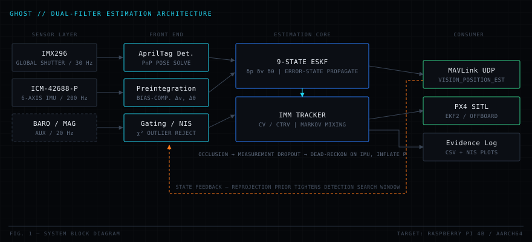

PRJ-01

Active development
2026 — PRESENT
GHOST — GPS-Denied Occlusion-Survivable Tracker
Dual-filter visual-inertial estimation on embedded Linux
Engineering challenge
GNSS is the first thing an adversary or an urban canyon takes away. The vehicle still has to know where it is, and where a moving target is, through seconds-long visual occlusions — on a compute budget that fits a Raspberry Pi.
Approach
Two filters with separate jobs: a 9-state error-state Kalman filter fusing 200 Hz IMU propagation with 30 Hz AprilTag pose fixes for ego-state, and an interacting-multiple-model tracker (constant-velocity / constant-turn) that coasts the target through dropouts with a χ² gate on reacquisition.
9
ESKF states
200 Hz
Propagation
10
Design revisions
20
Flaws found & fixed
C++Python
ESKFIMMPX4 SITL
MAVLinkRaspberry Pi 4B